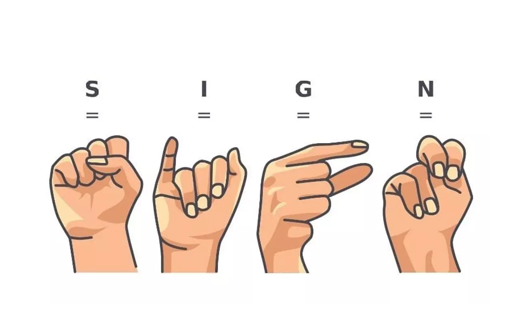

My Projects

COVID-19 Analytics using Machine Learning Model
Developed a COVID-19 analytics model using machine learning and exploratory data analysis to diagnose COVID-19 status, integrated with third-party APIs for real-time data and health information. The frontend is built on PowerBI to visualize and interpret the insights

Movie Recommendation System using Machine Learning
Implemented a content-based recommender system utilizing machine learning algorithms. Processed movie metadata to generate accurate recommendations. Deployed a user-friendly interface using Streamlit for seamless interaction
Payment Date Prediction using Regression Machine Learning Model
Developed a machine learning model to predict invoice due dates.Employed XGBoost regression model for optimal accuracy after comparative analysis of multiple regression algorithms on a preprocessed dataset.Deployed a user-friendly interface using HTML/CSS

Breast Cancer Detection using Machine Learning Model
This project aims to develop a tumor identification model using various regression algorithms. By applying regression techniques, the model will classify the nature of tumors based on the dataset's features, contributing to improved healthcare diagnostics
Banking ChatBot using DiaglogFlow
Built a chatbot utilizing NLP to assist customers with everyday banking needs, including card management, balance checks, and money transfers.Simplifies banking tasks through a conversational interface
Study hours prediction using Supervised Machine Learning
Utilized regression based machine learning models to forecast a student's expected score percentage by analyzing their study hours.It is also focused on analyzing data, creating visualizations and predictive modeling

Predicting 30-Day Hospital Readmissions in Diabetic Patients
This project focuses on predicting whether diabetic patients will be readmitted to the hospital within 30 days. Hospital readmissions are a critical indicator of healthcare quality and resource utilization. Using classification machine learning models and a comprehensive dataset from the UCI Machine Learning Repository, we aimed to improve healthcare outcomes by identifying high-risk patients.
